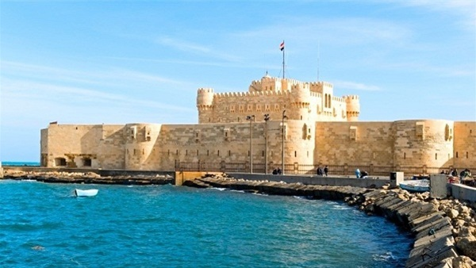
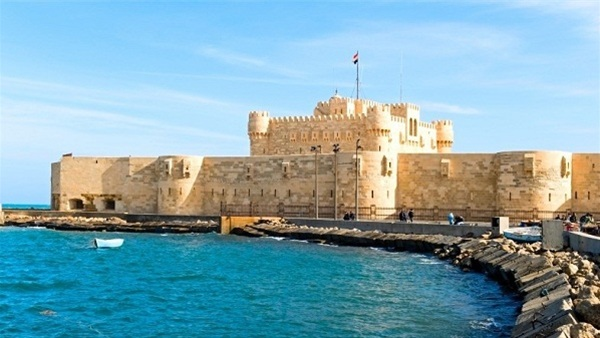

tourism in egypt
he number of tourists in Egypt stood at 0.1 million in 1952. Tourism became an important sector of the economy from 1975 onwards, as Egypt eased visa restrictions for almost all European and North American countries
best cities in egypt
alexandria
Egyptian Museum
The Egyptian Museum is one of the world's most important museums of ancient history and one of its great spectacles. Here, the treasures of Tutankhamun lie alongside the grave goods, mummies, jewellery, eating bowls and toys of Egyptians whose names are lost to history
giza
Giza in Egypt attracts tourists from different parts of the world every year. There are various places that you can explore in Giza. such as pyramids, it is the oldest amongst the seven wonders of the world and largest amongst the three other Giza pyramids. Made up of granite and limestone, the pyramids of Giza are almost 4500 years old.. Visit this place and discover the ancient Egypt. It is believed that this pyramid was built as a tomb for a king. Try visiting the pyramid in the morning as only a limited number of visitors are allowed here on a daily basis.
Salah al-den al-ayobi's castle
The Saladin Citadel of Cairo is a fortification in Cairo, Egypt. The location, part of the Muqattam hill near the center of Cairo, was once famous for its fresh breeze and grand views of the city, and was fortified by the Ayyubid ruler Salah al-Din between 1176 and 118
tourism in egypt
Egypt, Um-El-Dunya, literally translated as Mother of the World, is an Arabic expression which Egyptians and others have used over history in reference to the country’s ancient civilization, superlatives and achievements making it a unique tourist destination. The “Mother of the World” houses a plethora of unrivaled tourist and historical attractions and thrives with archaeological treasures and wonders rendering it a classic vintage of history and civilization. Tourists travel far and wide to explore the Pyramids and the Sphinx and trace remnants of the ancient Egyptian civilization kaleidoscope of Islamic, Coptic, Roman, Greek and Pharaonic colors.

.jpeg)


.jpeg)
 


the hanging Church
The Hanging Church is the most famous Coptic Christian church in Cairo, as well as possibly the first built in basilican style. The church is the site of several reported Marian apparitions. She is said to have appeared in a dream to Pope Abraham in the 970s in the story of how the Mokattam Mountain was moved by the faith of Simon the Tanner.

Sharm El-Shaikh
Sharm El Sheikh may just be the perfect beach vacation destination. Plus, its prime location at the southern tip of the Sinai peninsula and its proximity to the desert give the city an air of mystery and romance